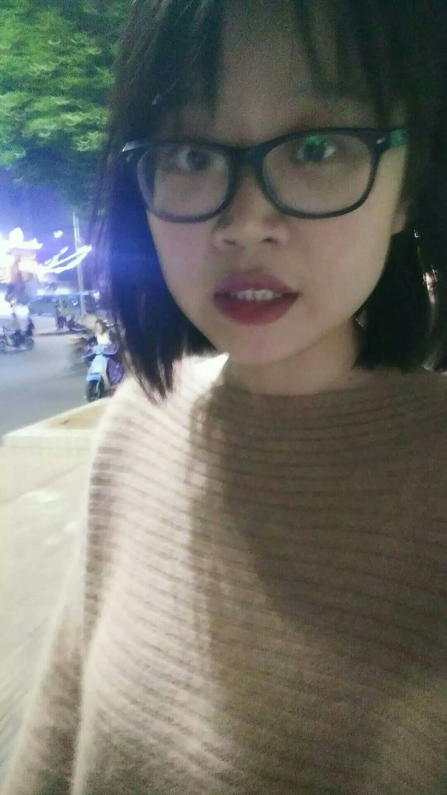
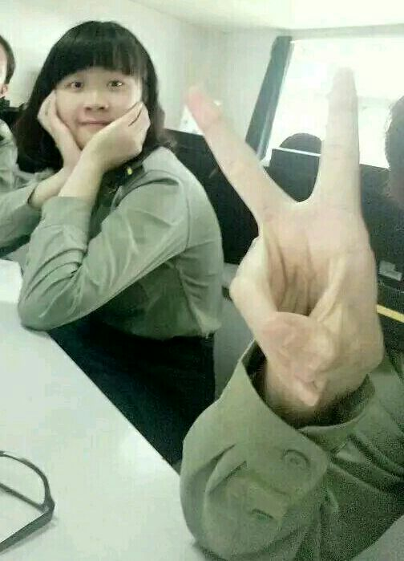
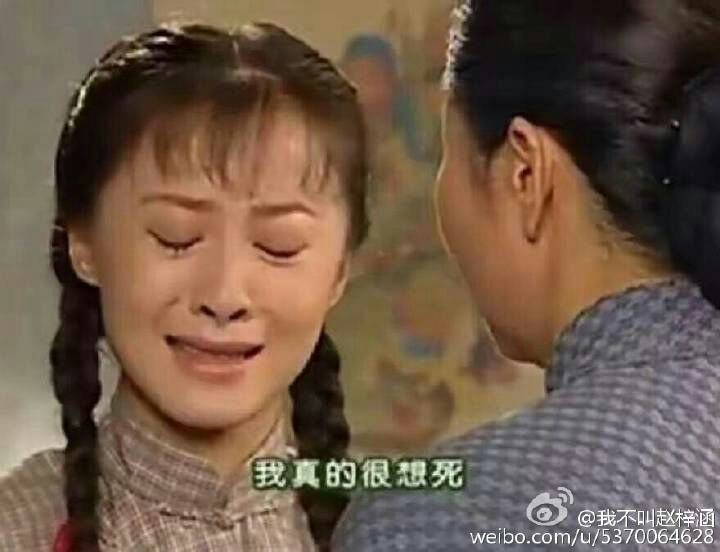
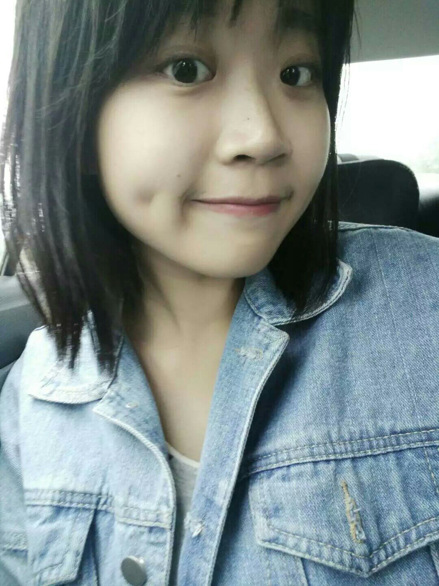
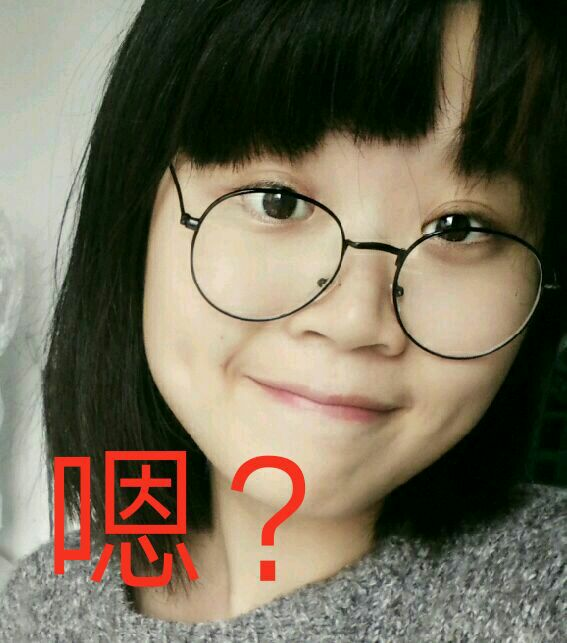
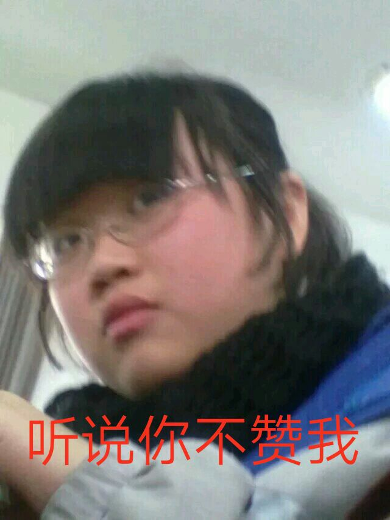

正文: 看了下回答都是在晒美照，作为一名度数600+的标准高度近视，我就勉为其难作为一股知乎泥石流辣辣各位的眼睛好了
其实戴不戴真的要看度数
如果高度近视那摘掉眼镜很有可能你妈都认不出你是谁
因为眼睛已经变形了呀，戴隐形就暴露了鱼泡眼就很丑
而且！！！
镜框真的很重要！！（敲黑板！！！）
初中戴的是最普通的那种眼镜（放出当时的照片我真的也是蛮拼）
对不起大家！那时候也很胖啦！
高中就换了大黑框，直到上个月（因为终于有了审美）

是不是好看了很多！（也有瘦了的原因嘿嘿嘿）
这个月开始戴隐形了
就单纯觉得不戴眼镜可能会很好看吧高度近视就暴露无疑了，眼睛变形还是蛮明显的，黑眼圈也是真的重，摘掉眼镜更显露无疑
但是尽管如此，我还是不想带眼镜了，我才不会说是因为是某次闺蜜说“你的眼睛真好看”之类的呢
而且！我严重怀疑！我的塌鼻子就是眼镜造成的！我“没鼻子”这个梗从小学被笑到了现在！！

关于对颜值的影响
想说的就是，如果本来就长的很普通又度数深（比如我），好看不好看完全取决于眼睛变形的程度，如果变形严重最好还是戴眼镜，戴眼镜的话最好带大的黑框吧，会让自己好看一点，颜值不够，黑框来凑hhh 如果是度数低的妹砸，趁眼睛还没变形，好好保护眼睛，能不戴眼镜就不带眼镜吧，毕竟眼睛是心灵的窗户呀（因为不戴更美）
（评论里有一些小可爱说，很高很高的度数的话，最好不要戴大框，谢谢小天使们提醒！！！其实我是打算以后做激光矫正，高度近视的小伙伴们可以考虑一下）
好了啰哩吧唆以后，强行洗眼

另外，上个礼拜买了一副圆框装逼，在这里再强调一下镜框的重要性

最后，最重要的一点

以上(〃▽〃)